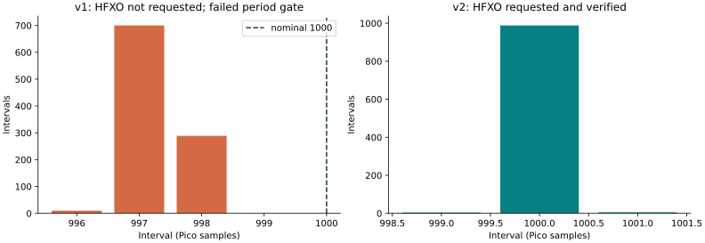
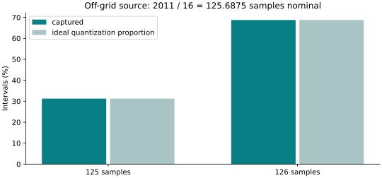
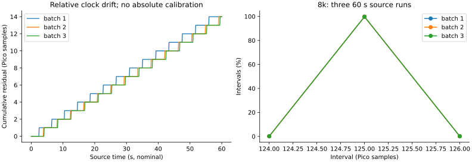

方向五 · 2026-10-23 · 有线方法验证
从有限窗口，推进到独立时钟连续采集
沿用Pico W＋DK9577及原三线：一次启动之后，DK用自己的硬件时钟输出边沿列，Pico连续记录并在采集期间导出。正式24次实验均达到各自预期：21次完整采集，3次故意耗尽缓冲后严格拒收。
1,533,000正式有效记录中的物理B边沿
3 × 60 s8k边沿源长批次，逐批独立核对
3 / 3缓冲故障拒收，随后新试验恢复
1 MS/s标称采样率；实际校准值仍为null
本轮是8000次GPIO翻转／秒的有线源与连续采集验证。方波基频为4 kHz。它没有运行ESB，不证明无线8k收发、USB报告率或端到端鼠标延迟。1 μs采样网格不等于1 μs绝对准确度。
原理与固定接线
Pico GP12 ─── DK P1.03：一次低／高阻启动，之后Pico只采集
Pico GP13 ─── DK P1.04：DK TIMER20 → DPPI → GPIO翻转
Pico GND ─── DK GND：共地；电源输出不互连
DK边沿硬件计数达到N → 硬件停止源 → 一次CPU完成通知
Pico同一条 in pins, 2 → 四块DMA环形缓冲 → 编号＋CRC → USB CDC
任一块连续性失效 → 整次无效
两个振荡器独立运行；共同启动不等于共享时钟。每块65536个样本、16384字节，四块共64 KiB。块序号与原始样本索引跨块延续。结束状态、源硬件计数和独立重解析共同核对，不靠“看起来连续”的图像放行。
标称换算：f_s = 125 MHz / (125 × 1) = 1 MS/s，Δt = Δn / f_s。没有外部参考，不能用DK与Pico的相互比较声称绝对校准；全部保存整数样本索引，估计采样率为null。
先发现问题，再修正时钟配置
v1冒烟的1000个边沿全部被计到，协议与数据块完整，但周期为996–998个采样点，未通过原定周期判据。v2增加HFXO请求、等待与状态确认；启动诊断记录请求前为0、请求后为1，随后同条件1k测试通过。没有为通过试验放宽周期门槛。

v1失败与v2冒烟均不计入正式24批。该修正只针对本分支，不据此重新解释此前无线丢包或旧模型的所有偏差。
持续采集与非整数周期验证
1k、2k、4k、8k、2011 ticks非整数周期各3批。后者标称125.6875 μs、约7956.24次翻转／秒，故采样间隔应主要落在125与126两个格点。它用于检查量化与跨块提取，不作为8k整频工况。

8k长测每批源输出480000次翻转；首次到末次包含479999个间隔。每批连续采集60.555264标称秒并导出924个数据块。下面残差混合两个独立时基的相对频偏与采样量化，不是经校准的DUT真实抖动。左图按每800边沿取点，完整性与统计仍使用全量数据。

实物故障注入与下一轮恢复
首块就绪后，让Pico前台导出暂停500 ms；DMA继续运行，实际触发缓冲所有权错误位2。三次均在4块之后结束并拒收整次记录，先前已发出的块也不用于时间统计。紧接着用新run ID重新ARM，三次均成功采到8000个边沿；同一串口会话内未重刷、未发送重启命令。
这是真实的固件导出暂停与缓冲耗尽，不是直接拔USB或真实主机限速实验。故障窗口的源可能继续输出至主机freeze，故源终计数与已采块中的边沿数不能混为同一个量。
24次正式记录，可逐项追溯
独立核对重新读取原始wire、逐块核验CRC，再用不同的32位XOR方法提取边沿；有效数据的整数边沿序列逐项与主分析器一致，故障记录保持无效。离线故障视图不冒充新增硬件试验。
本轮得到的研究增量与下一关
- 完整性可验证：连续原始索引、块所有权、源硬件计数与全局终态一起判断，故障时整次拒收。
- 恢复有实证：真实耗尽后在下一run恢复，三次通过；不是只展示理想条件的均值改善。
- 时钟条件可审计：发现“配置为16 MHz”不足以证明晶振已启用，并通过状态登记与固定门槛验证修正。
这些是可写进毕设的方法与工程增量，尚不能据此声称首创、专利新颖性或任意负载下不丢样。下一关仍是外部参考核验，以及取得第二个兼容节点后把有线源换成带事件身份的无线输入链路。
报告由已保存数据离线生成：2026-10-23T13:39:24.337976+08:00。此页面不控制开发板。